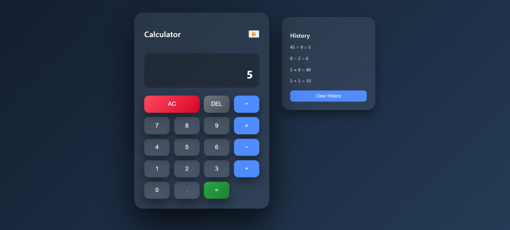

I am an aspiring web developer with a strong interest in building clean,
responsive, and user-friendly web applications. I focus on creating modern
interfaces that balance visual appeal, performance, and usability.
I enjoy turning ideas into practical digital solutions through well-structured
and efficient code. My approach emphasizes simplicity, scalability, and
maintainability while following best development practices.
I continuously improve my skills by learning new technologies, experimenting
with real-world features, and refining my problem-solving abilities. I am
motivated, detail-oriented, and passionate about creating web experiences
that are both functional and meaningful.
Education
BCA — 3rd year
Focused on building practical, real-world web applications.
Web Development Practice
Developed responsive and interactive web applications using HTML, CSS, JavaScript and Responsive Design.
Effective CommunicationTeam CollaborationProblem SolvingAnalytical ThinkingTime ManagementTask PrioritizationAdaptabilityQuick LearnerAttention to DetailCreativityNegotiation
Projects

Pro Notes App
A web calculator performs basic arithmetic operations like addition, subtraction, multiplication, and division quickly through a simple interactive interface.
HTML • CSS • JavaScript